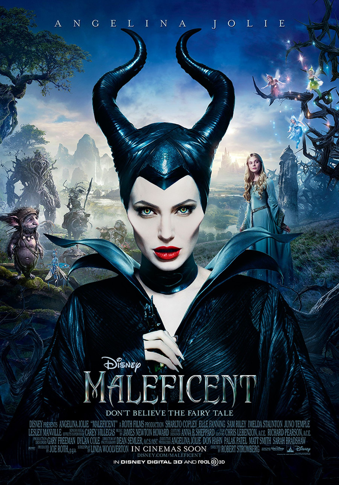

Director: Robert Stromberg
Main Actress: Angelina Jolie
"Maleficent" explores the untold story of Disney's most iconic villain from the classic "Sleeping Beauty" and the elements of her betrayal that ultimately turn her pure heart to stone. Driven by revenge and a fierce desire to protect the moors over which she presides, Maleficent cruelly places an irrevocable curse upon the human king's newborn infant Aurora. As the child grows, Aurora is caught in the middle of the seething conflict between the forest kingdom she has grown to love and the human kingdom that holds her legacy. Maleficent realizes that Aurora may hold the key to peace in the land and is forced to take drastic actions that will change both worlds forever. (c) Walt Disney Pictures
I absolutely loved Maleficent! Angelina Jolie's acting was skillful, and I think that one could really relate to Maleficent. I also really liked how the movie was told from her point of view, instead of painting her as a villain. Not to mention, the special effects were tastefully done, and the soundtrack was so beautiful! I loved this movie. 5/5!.